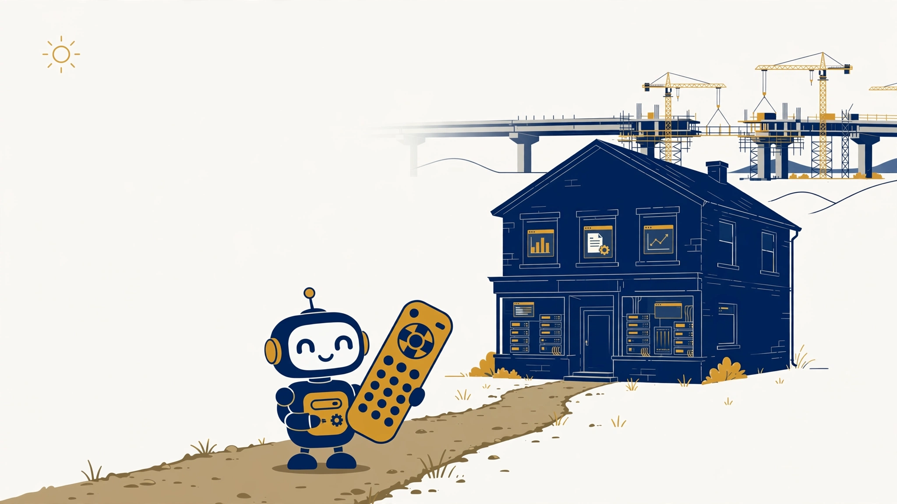
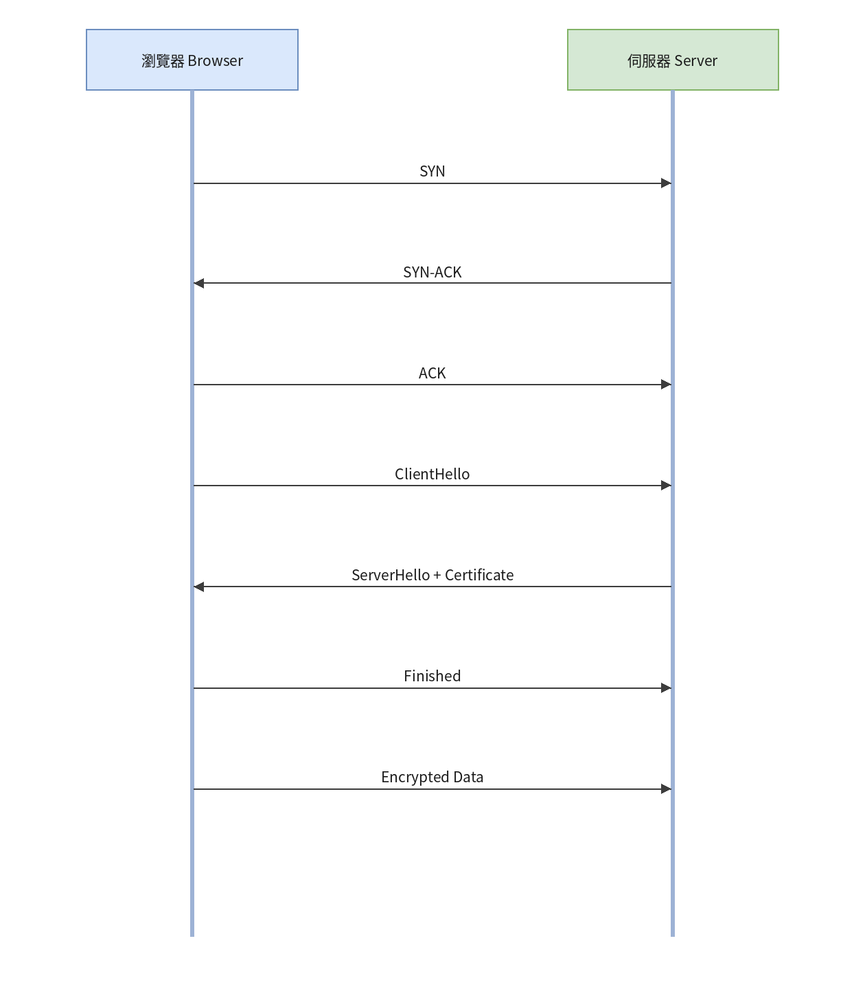
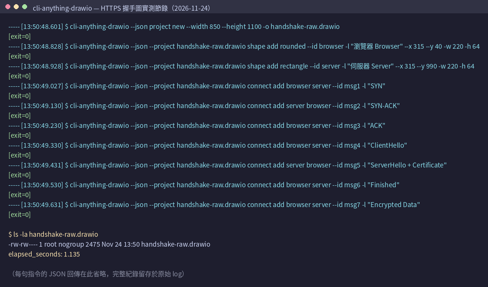

先講結論：CLI 不是 API 的替代品，而是一套新的整合順序——先用低成本把 AI 接上系統、驗證價值，再決定哪裡值得投入正式的 API 建設。企業把 AI 接上既有系統，第一個撞到的往往不是模型不夠聰明，而是系統根本沒有 API；過去唯一的答案，是花錢、花時間請人開發。自行開發或生成的 CLI（命令列介面）整合，提供了另一種順序，以下用第一性原理拆。
一、整合的本質：交換意圖與結果
先看一個日常場景：同仁想查一筆舊資料，資料明明躺在老舊後台裡，卻要開三層選單、等承辦人調出來。資料在，意圖送不進去、結果出不來——這就是整合問題的原型。把行銷詞拿掉，整合的本質只有一件事：讓兩個系統交換「意圖」與「結果」。想通這一層，就不會把「沒有 API」誤判成「無法整合」；真正要問的是：這個系統的能力，目前透過哪些通道暴露出來？
二、介面的本質：能力如何被暴露
API 是專為機器修的高速公路：平整、快速、規則完備，但要先付龐大的建設費，還要等施工排程。CLI 則是早就存在的人行道：工程師為了自己操作系統而建，本來就鋪在那裡，只是過去只有懂指令的人走得動。實務上有兩條路：一是沿用系統既有的 CLI；二是為軟體生成或封裝一支 CLI，把操作路徑整理成指令介面——像在既有路網旁鋪一小段連接道，工程遠小於修一條高速公路。前提也要講清楚：這條路只適用於有指令介面、或有可封裝操作路徑的系統；完全封閉、只剩資料庫可挖的，不在此列。
變化發生在 AI 這一側。Threads 讀者 alicken 的留言說得很精準：CLI 讓 AI 操作軟體從「畫面識別」進化到「語意理解」。當 AI 從辨認畫面、猜哪裡可以點，進化到理解指令的語意、直接下指令，原本只有工程師走得動的人行道，就成為 AI 也能通行的路。
實例是香港大學的 CLI-Anything：它用 7 個階段的流程，為六十多個軟體各生成一支專屬 CLI；截至 2026 年 11 月查核時，在 GitHub 上累積六萬多顆星；採 Apache-2.0 開源授權，企業可自行部署、稽核程式碼。我自己實測：10 句指令，它用 Draw.io 約 1 秒畫完一張 HTTPS 握手圖。這只是一個例證，不代表其他軟體的成功率與耗時，但示範了路徑的可行性。


三、成本的本質：誰先付、何時付
API 的成本結構是「預付制」：開發、測試、上線、維運，錢在看到價值之前就先花下去，還要跟其他需求搶 RD 排程。結果只有少數核心系統排得到預算；大量的長尾系統——老舊後台、內部報表、低頻查詢工具——永遠排不到、永遠與 AI 無緣。CLI 的成本結構不同：不必更動系統本體、不必等廠商排程，以我的實務經驗，建置與驗證多半落在天到週的量級，隨既有介面的完整度而變；生成或封裝一支 CLI 的成本高於沿用現成介面，帳號權限梳理、資安審查與測試的工時則兩條路都省不掉。CLI 真正轉移的是成本型態：一部分前期建設費，換成持續性的看守——對方改版、介面跟著變，整合就可能失效，需要有人負責修。說到底，兩者不是誰貴誰便宜，而是付款時點與風險分配不同：API 先付錢買確定性，CLI 先上路，再用維護換取提早實現的價值。
四、信任的本質：契約還是默契
API 背後是契約：版本政策、權限範圍、SLA。CLI 走的是默契：借用既有介面，對方改版不會通知你，穩定性先天較弱。資安面的落差更要講清楚，而且要加一個限定——若未另行設計，API 多半使用專屬憑證、權限可以切得很細、存取紀錄相對完整；CLI 操作卻常沿用「人的帳號」執行，權限邊界跟著帳號走，稽核與究責都會變模糊。還有一個常被忽略的場景：內部或地端系統接上雲端模型時，指令與回傳結果可能把內部資料一併送出。因此走 CLI 路線，最低限度的配套是：專用服務帳號取代個人帳號、最小權限、重要操作設指令白名單、完整命令日誌、執行環境沙箱隔離，避免模型被誘導執行非預期指令。再加上錯誤成本不對稱：查詢查錯了可以重來，訂位、付款這類交易一旦出錯，是要真金白銀賠的。這些不是反對 CLI 的理由，而是提醒：信任需求越高的流程，越不能只靠默契。
五、決策的本質：分級使用，與畢業機制
前四層拆解推到這裡，決策框架自然浮現。分級使用：
- 唯讀、低頻、內部使用、錯了可以重來的流程：CLI 直接上，不必猶豫。
- 有寫入但結果可逆的流程：CLI 加一道人工確認閘門，AI 先備好動作，人確認才執行。
- 牽涉交易、付款、大量個人資料、對外承諾，或需要稽核與 SLA 的流程：投資正式 API。
再來是「畢業」機制：CLI 是探勘，API 是投資。畢業的觸發不只看使用量與價值，也要看風險：流程即使使用量不高，只要錯誤成本或稽核需求升高，就該啟動 API 投資評估。若廠商封閉、根本建不出 API，則走長期治理：登錄清單、專用帳號、命令稽核、定期複檢，讓它在受控下繼續用 CLI。治理還包括責任歸屬：每支 CLI 要有維護人，改版弄壞整合時有人負責修，資安審查比照一般系統變更——先講好這些，才能避免各部門自行發展、無人登錄的影子 IT。
至於導入的第一步，不必大張旗鼓：挑一個唯讀、低頻、內部的流程做試點，指定負責人，小範圍跑過後，用實際使用次數與省下的人工時間，判斷值不值得擴大。
結語
所以，不要問「CLI 會不會取代 API」——那是錯的問題。高速公路與人行道會長期並存，各有各的車流。真正的問題是順序：過去我們被迫先付建設費才敢出發，現在可以先走路、先抵達、先證明這趟路值得，再回頭為最繁忙的路段修高速公路。第一步很小：盤點你手上沒有 API 的系統，挑一個唯讀流程，今天就能開始試。